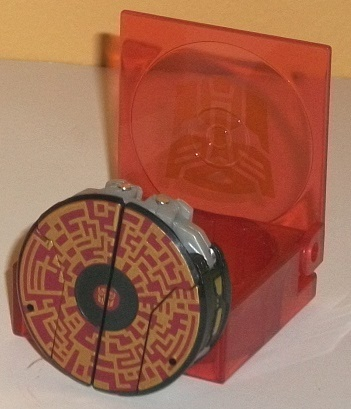
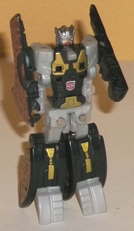
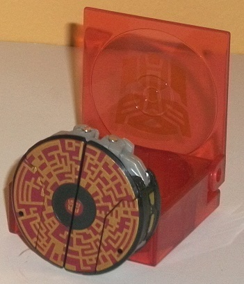
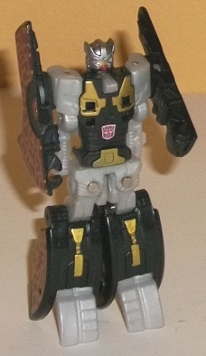
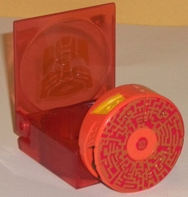
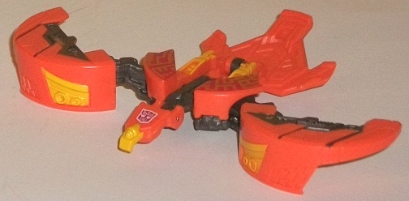

 
Difficulty of Transformation : Very Easy
Color Scheme : Black, light milky gray, metallic gold, brick red, and some red and bright orange
Individual Rating : 6.7
Allegiances
: Autobot
Size
: Legends 2-pack
Overall Rating
: 7.3
(NOTE: Because this set is composed of repaints,
this is not a full-blown review. This mainly covers any changes made to
the set and the color scheme, and merely compares it to the original versions
of these molds. For a review on FoC Rumble-- the mold used for Rewind--
go
here
. For a review on FoC Laserbeak--
the mold used for Sunder-- go
here
.)
 Autobot
Rewind
Autobot
Rewind


Difficulty of Transformation
: Very
Easy
Color Scheme
: Black, light milky
gray, metallic gold, brick red, and some red and bright orange
Individual Rating
: 6.7
Rewind is another of
Blaster's little buddies that makes a return for the Fall of Cybertron
subline as a data disc. His overall color scheme is rather unremarkable--
black and light milky gray is honestly rather boring and not eye-catching
at all. However, where Rewind partially makes up for this are with his
paint apps-- particularly the light gold, which adds a considerable amount
of color diversity to his robot mode, particularly on his chest. His head
is also painted quite well, having a silver "helmet" and gold visor with
a red faceplate. It's a bit too similar to
Eject's
--
only the faceplate color is different here, and just barely-- but it still
looks good by itself, and is certainly G1-accurate. As usual with these
little guys, in data disc mode Rewind has some awesome "circuitry" paint
apps, having a gold pattern painted on top of a brick red base. Both colors
go together very well, and they're the only large eye-catching part of
Rewind's color scheme-- I sure wish the red had been used a bit more in
his 'bot mode. Like the other data disc buddies that come in these Legends
2-packs, Rewind comes with his own carrying case-- a translucent red one,
as is befitting an Autobot-- though the Autobot symbol painted on top is
gold, as opposed to the silver Autobot symbols on the cases of Blaster's
other 2-pack of data disc buddies. Odd...
Rewind has the same
changes made to the base mold as his buddy Eject-- however, no unique mold
changes have been made to Rewind himself.
 Sunder
Sunder


Difficulty of Transformation
: Very
Easy
Color Scheme
: Light orange, milky
gunmetal gray, metallic gold, moderately dark red, and some yellow and
metallic gunmetal gray
Individual Rating
: 7.8
Sunder is the only one
of
FoC Blaster's
little data disc partners
that is a "new" character, at least for the U.S. market. "Sunder" is actually
an homage to Sundor, a Takara redeco of the G1 Laserbeak mold in similar
colors. Kind of a rather obscure place to go, but hey, it gives this mold
an excuse to be used as an Autobot! The "fiery" color for the appropriately-named
phoenix-disc is quite eye-catching, with a striking shade of orange that's
accented by a fair number of yellow paint apps (particularly in bird mode).
There's also some nice gunmetal gray-- both in terms of paint and in terms
of a rather nice, metallic-looking shade of plastic-- that's mostly visible
in bird mode and gives Sunder's otherwise bright color scheme a darker
shade to play off of. It all comes together really well-- and, of course,
there's the awesome "circuitry" patterns on the top of his data disc mode.
Here, as with Rewind, the circuitry pattern is gold, painted on top of
a dark red base (the latter of which is a bit less dull than Rewind's,
but still in the same general area of the color wheel). It looks quite
good, though against the light orange I would've preferred a bit lighter
of a shade of gold for the circuitry patterns. On a small, niggling complaint,
Sunder's tailfeather piece isn't painted at all, though he has several
other paint apps that make me all but overlook that. Like with Rewind,
Sunder comes with his own transparent red carrying case for his disc mode,
with a gold Autobot symbol painted on the top.
No mold changes have
been made to Sunder.
The Rewind/Sunder 2-pack is one of the better FoC data disc 2-packs in terms of mold usage. Sunder also has an awesome, fiery color scheme that's used on the best disc mold there is. Rewind, on the other hand, looks particularly dull color-wise, especially when measured up against Eject. If you want to beef up your FoC Blaster's ranks, this two-pack is obviously a no-brainer-- but if you don't like the very limited articulation and spring-loaded transformation gimmick of the data disc buddies, I'd still consider this a pass. Overall though, it's my second-favorite FoC 2-pack (only being topped by Frenzy & Ratbat ).
Reviews by Beastbot